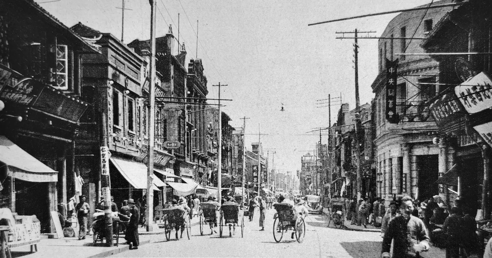

姑苏寻影地图

档案 01观前街1930年代 · 选自《苏州通史》
01 / EXPLORE
从哪儿出发？
找一座消失的楼阁，认出老街的轮廓，或沿河看看从前的生活。
姑苏寻影地图
虚线表示站点顺序。实际步行请参考导航与现场通行。
02 / COLLECT
探索手记
收好沿途的照片与发现，下次打开还能接着走。
打开完整影像档案 浏览原有点位、古今对照与拍照工具
SUZHOU · A WALK THROUGH TIME
旧影为引，
姑苏等你来寻。
从一处轮廓，发现一座城。SUZHOU · ONE FRAME · TWO MOMENTS
走进姑苏，
与旧时光相遇。
一张旧照片，一条水巷，一次新的发现。滑动影像读懂古今，带着线索走到现场，把今天的你留在姑苏的故事里。
20 处历史影像⌖ 循线索去发现○ 照片留在本机
↔
ARCHIVETODAY
1930年代 · 选自《苏州通史》2024 · 来源：古城阳面
Guanqian Street · 观前街1930s → 2024 · Drag to reveal the changing street.
THREE WAYS TO BEGIN
先从一张旧影，认识姑苏。
街巷、水岸、城门。三段影像故事，开启你的古城探索。更多地点，留待地图里慢慢发现。
1 / 3
A SMALL ACT OF FIELDWORK
看见过去，
留下今天。
- 01读一段旧影
从照片里的一个细节出发，发现城市的改变与延续。
- 02沿线索去寻找
跟随地图与轮廓指引，在街巷里认出旧影留下的线索。
- 03完成古今合影打卡
让旧影卡与眼前的轮廓接上，留下一张纪念照，点亮你的时光灯笼。
THE FIELD ROUTE
下一段故事，就在街巷里。
20 处旧影坐标 · 按兴趣探索，或跟随主题漫步。
GUSU · FIELD NOTES循着旧影，发现今天的姑苏
0 / 20待探索✦时光灯笼 · 已点亮